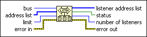

FindLstn Function
Owning Palette: GPIB 488.2 Functions
Requires: Base Development System
Finds all Listeners on the GPIB.
FindLstn detects the presence of devices at particular addresses because most GPIB devices have the ability to listen. When you detect the devices, you can usually interrogate them to determine their identity.
Refer to GPIB Function Defaults for more information about the timeout and address defaults.

 Add to the block diagram Add to the block diagram |
 Find on the palette Find on the palette |